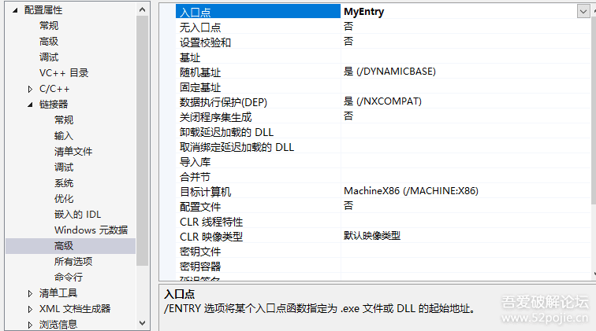
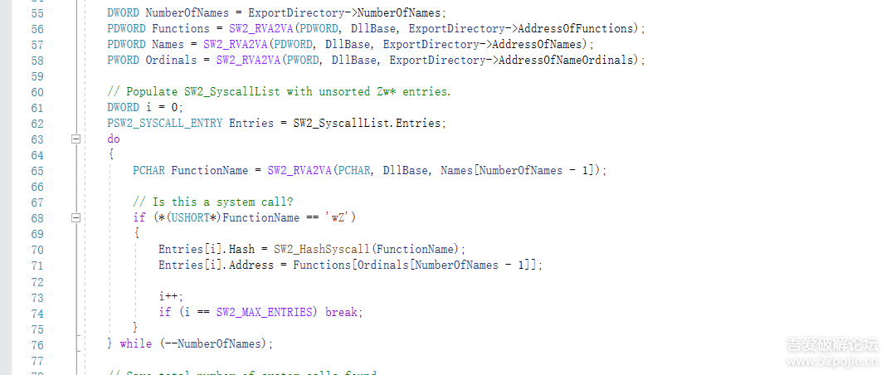
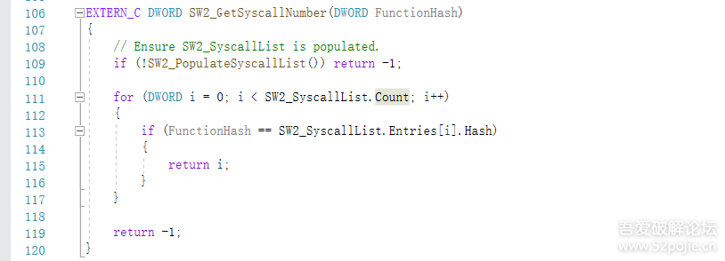

ShellCode免杀框架｜内附SysWhispers2_x86直接系统调用
以下文章来源于moonsec ，作者快乐鸡哥
暗月博客
本帖最后由 mai1zhi2 于 2021-1-28 12:27 编辑
文章来自：https://www.52pojie.cn/thread-1360548-1-1.html
如有侵权，请联系删除
1、概述
之前分析CS4的stage时，有老哥让我写下CS免杀上线方面知识，遂介绍之前所写shellcode框架，该框架的shellcode执行部分利用系统特性和直接系统调用（Direct System Call）执行，得以免杀主流杀软（火绒、360全部产品、毒霸等）,该方式也是主流绕过3环AV、EDR、沙箱的常用手段。Ps:感谢邪八Moriarty的分享课。
2、简要介绍
该框架主要由四个项目组成：GenerateShellCode：负责生成相关功能的shellcode。EncryptShellCode：负责以AES128加密所将执行的shellcode。FunctionHash：负责计算shell中所用到函数的hash值。XShellCodeLoader：负责执行加密后的shellcode。
2.1 GenerateShellCode
以简单弹窗messagebox生成的shellcode作介绍，定义的入口函数MyEntry()，先定义了GetProcAddr()、LoadLibaryA()和MessageBoxA()三个函数对应的hash，然后通过MyGetProcAddress()传入hash值和kernel32基址返回相关函数地址再进行调用
通过GetKernel32Base()函数获得kernel32基址：
首先打开已经抠出的shellcode文件，并将器读入内存：
2.3、FunctionHash
这个比较简单，计算所需要用到函数的hash值：
2.4、XShellCodeLoader
下面着重介绍下shellcode的执行实现，因为x86、x64进0环进3环的方式不同，在这里简单介绍下不同版本3环进0环的方式：一、32位的程序在32位系统上运行有两种方式进0环，第一个是中断门int 02Eh，第二种是sysenter二、32位的程序在64位系统上运行，通过FastSystemCall进0环三、64位的程序在64位系统上运行，通过syscall进0环这里用vs的Release x86来进行编译，所生成的32位exe程序在32位系统运行使用sysenter进0环，在64位系统则使用FastSystemCall进0环。下面我们先以32位程序运行在32位系统的sysenter进行讲解：首先自定义一个区段，该区段的属性最好只为read，一定不要read、write、execute全上，这种全属性在内存中会显得很可疑，区段名最好为系统常用的而这个程序又没用到的，如.edata，因为360杀毒可能会对不常见的区段名报毒，另外不建议使用#pragma section(".edata",read,execute,nopage) 该方式定义区段名，因为该方式生成的区段会出现在程序中所有区段的最前面，360杀毒报毒，特征较明显。使用以下方式去定义区段，区段的内容为已AES加密的shellcode：
Call internal_cleancall_wow64_gate,internal_cleancall_wow64_gate的值为__readfsdword(0xC0)，即FS[0xC0] WOW32Reserved3、执行效果
3.1、实验环境：
Team server: Kali 2020 ip: 192.168.202.131控制端：win7 32位 ip:192.168.202.134受控端1：win 7 32位 ip: 192.168.202.140受控端2：win10 1907位 ip: 192.168.202.1
3.2、32位系统执行
火绒版本号：
静态查杀，未发现风险：
3.3、64位系统执行
同样成功执行并上线（测试过程同上）
4、SysWhispers2项目简介
该项目较为简单，主要方法有三个：
一、SW2_HashSyscall()
二、SW2_PopulateSyscallList()该函数中首先找到ntdll的基址：
将SW2_SYSCALL_ENTRY的列表按照函数地址进行从小到大冒泡排序：

KiFastSystemCall版本，使用方法均与原版一致：
https://github.com/mai1zhi2/SysWhispers2_x86

点赞，转发，在看
来源Github
如有侵权，请联系删除